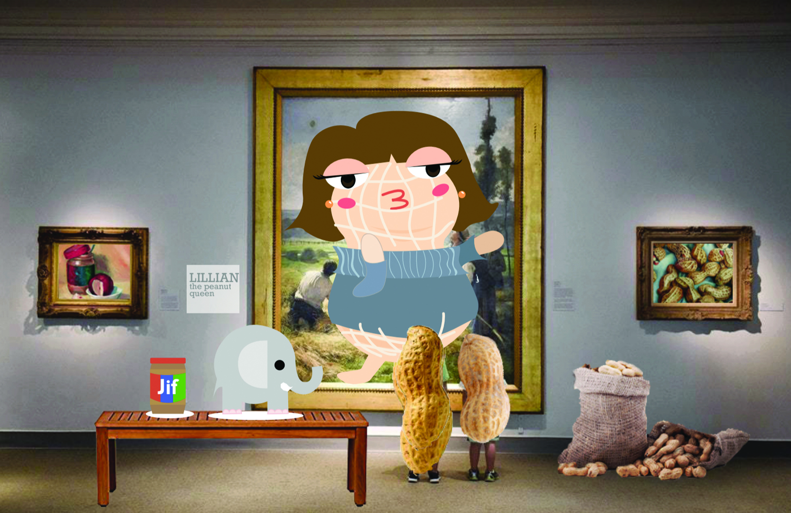

HOME | PIXELS | VECTOR | MOTION | PRINT | CONTACT

WHEN I REGISTERED FOR THIS CLASS, I WAS EXCITED LEARNING ABOUT ILLUSTRATOR THE MOST. ILLUSTRATOR BECAME ONE OF MY FAVORITE PROGRAMS BECAUSE IT GAVE ME THE FREEDOM TO INTERCHANGE COLORS EASILY AND THE CRISPNESS OF VECTORS WERE SO STATISFYING TO THE EYE. THE MAIN CHARACTER OF THIS PIECE IS NAMED LILLIAN AND SHE IS A CHARACTER I'VE CREATED IN THE 6TH FRADE. I'VE ALWAYS ENJOYED PUNS, SO I DECIDED TO VISUALLY CREATE, AS A JOKE, AN ACTUAL "PEANUT GALLERY."